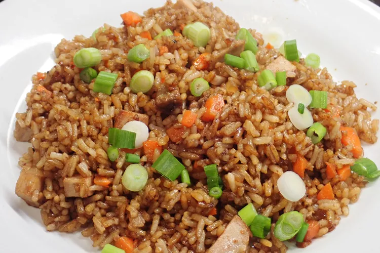

Pork Fried Rice

A great recipe for leftover pork chops, roasts, and more.
A few bits from the fridge turn into a tasty dinner in less than 45 minutes.
If I have a leftover grilled pork or the tail of a roast,
I'll freeze it until I have enough for this dish.
You can also use chicken or substitute some of the veggies for what you have on hand when cleaning out the fridge.
Serve with sweet Thai chili sauce on the side.
- 2 teaspoons vegetable oil
- ½ cup finely chopped fresh mushrooms
- 6 cups cooled cooked rice
- ¼ cup vegetable oil, divided
- 1 ½ cups cubed cooked pork
- 2 cloves garlic, finely chopped
- 1 (1 inch) piece fresh ginger, finely chopped
- 3 stalks celery, diced
- ½ small onion, diced
- 1 large carrot, diced
- ½ red bell pepper, diced
- 1 tablespoon soy sauce
- 3 green onions, finely chopped
- Heat 2 teaspoons vegetable oil in a skillet over medium heat; cook and stir mushrooms until liquid has evaporated, and mushrooms are browned, about 15 minutes. Set mushrooms aside.
- Fluff cooked rice with a fork and stir in 1 tablespoon vegetable oil to separate the grains. Set aside.
- Heat remaining 3 tablespoons vegetable oil in a large skillet or wok over medium heat. Cook and stir pork, garlic, and ginger until fragrant, about 1 minute. Add celery, onion, and carrot. Cook and stir until vegetables begin to soften, 3 to 4 minutes. Stir in bell pepper and cooked mushrooms just until combined.
- Add in cooked rice, lightly tossing until rice is heated through and thoroughly combined with pork and vegetables. Stir in soy sauce, remove from heat, and sprinkle green onions over the top.